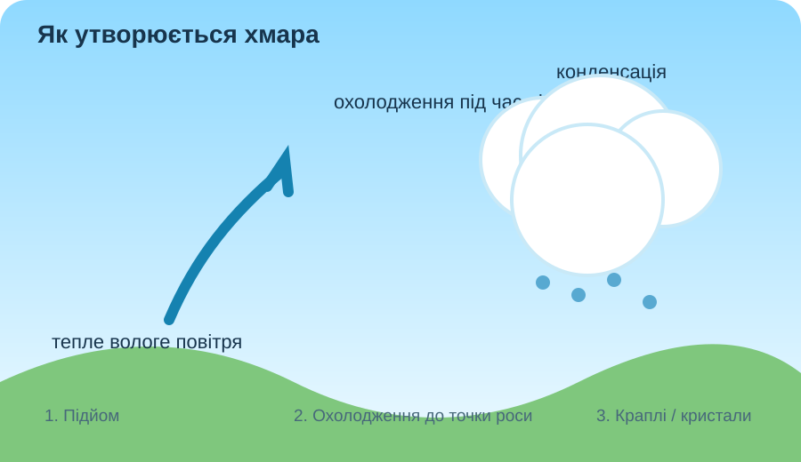
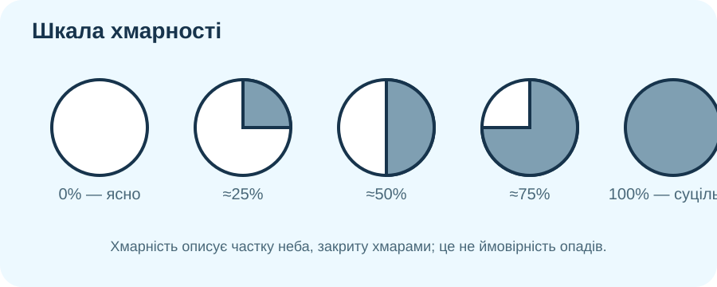

Одна вода — різні хмари

🔎 Що можна довести з картинки?
Виберіть твердження, яке найкраще спирається на сам знімок.
Коли невидима пара стає хмарою?
Модель підняття повітря

Причинний ланцюг
- Вологе повітря піднімається.
- Під час підняття воно розширюється й охолоджується.
- За достатнього охолодження досягається насичення.
- Водяна пара конденсується на дрібних частинках — утворюються краплі/кристали.
Читайте небо як карту
Класифікація хмар поєднує висоту та форму. Почнімо не з назв, а з ознак.
Купчаста
Окремі білі «купи», пласка основа, помітний вертикальний розвиток.
Шарувата
Низький суцільний або майже суцільний сірий шар.
Периста
Дуже висока, тонка, волокниста; переважно з кристалів льоду.
☁️☁️
🌧️⚡
Купчасто-дощова
Висока потужна башта; вершина може нагадувати ковадло.
Натисніть кнопку на картці.
🧠 Кейс метеоролога
О 10:00 Ви бачите невеликі купчасті хмари. О 14:00 вони стали значно вищими, темнішими знизу, вершини швидко ростуть. Яка зміна в атмосфері найімовірніша: послаблення чи посилення конвекції? Який прогноз має більше доказів?
Не «сонячно/хмарно», а частка неба

Хмарність — ступінь покриття неба хмарами. У метеорології її часто описують частками неба (октантами) або відсотками.
Оцініть хмарність
Завдання: поясніть, чому 80% хмарності не означає «80% імовірності дощу».
Чому туман «лягає» на поверхню?
Модель нічного охолодження
Туман чи низька хмара?
NOAA формулює різницю дуже просто: туман — це хмара, яка торкається земної поверхні.
NOAA: Fog and Clouds🛰️ Супутникова пастка
На знімку NASA білий гладкий шар вкриває море, а поруч над сушею видно сніг. Чому одного лише білого кольору недостатньо, щоб назвати об’єкт хмарою?
🌍 Жива карта хмар
На Windy увімкніть шар «Clouds» або «Satellite». Знайдіть Україну й порівняйте суцільні та комірчасті поля хмар.
Відкрити WindyХмари як підказка до погоди
Дивіться з двома питаннями
1) Які ознаки показують висоту та форму хмар? 2) Яка хмара найкраще сигналізує про небезпечну конвективну погоду?
Відео NOAA/NESDIS для учнів.
Зберемо правила
Скупчення дрібних крапель води та/або кристалів льоду, завислих в атмосфері.
Потрібні водяна пара, охолодження до насичення та ядра конденсації/кристалізації.
Залежить від висоти, температури, стійкості повітря та сили вертикальних рухів.
Частка небосхилу, закрита хмарами; це не те саме, що ймовірність опадів.
Хмара біля земної поверхні, яка знижує горизонтальну видимість.
Тип і розвиток хмар — доказ про процеси в атмосфері, але не «магічна» гарантія погоди.
Чи можна за виглядом хмар обґрунтовано прогнозувати погоду?
§30 + власне небо
1. Опрацюйте §30 в електронному підручнику. 2. У будь-який час протягом дня сфотографуйте або замалюйте небо; визначте тип хмар і приблизну хмарність. 3. Запишіть прогноз на найближчі 3 години та один доказ.
Електронний підручник — ВШО«Ознаки → тип хмар → хмарність → прогноз → доказ».